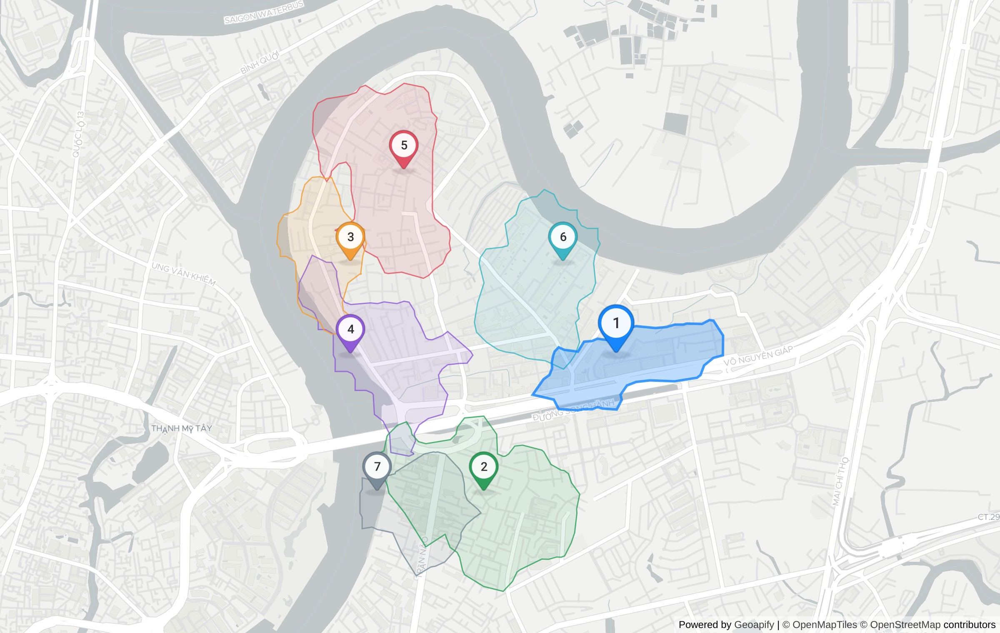

coffee shop in Phường An Khánh
Where should I open a specialty coffee shop in Thảo Điền?

| # | Candidate | Score | Demand | Competitors | Drive (min) | Evidence |
|---|---|---|---|---|---|---|
| 1 | 159, Võ Nguyên Giáp 10-min walk reaches 0.31 km² with 3 commercial.clothing, 1 sport.fitness and 4 competing catering.cafe; 34 min average drive from 3 origin(s). | 0.66 | 4 | 4 | 33.6 | T12 T13 T14 T15 T16 T17 T53 T54 T55 |
| 2 | Trường Mầm Non Yêu Con, Đường Số 3 10-min walk reaches 0.69 km² with 2 office and 6 competing catering.cafe; 31 min average drive from 3 origin(s). | 0.56 | 2 | 6 | 31.3 | T30 T31 T32 T33 T34 T35 T53 |
| 3 | 112/11 - 112/13, Nguyễn Văn Hưởng 10-min walk reaches 0.27 km² with 2 office and 0 competing catering.cafe; 35 min average drive from 3 origin(s). | 0.52 | 2 | 0 | 35.5 | T6 T7 T8 T9 T10 T11 T53 |
| 4 | 16, Nguyễn Văn Hưởng 10-min walk reaches 0.45 km² with 2 commercial.clothing, 1 office and 9 competing catering.cafe; 32 min average drive from 3 origin(s). | 0.46 | 3 | 9 | 32.2 | T42 T43 T44 T45 T46 T47 T53 |
| 5 | 216/3/16, Nguyễn Văn Hưởng 10-min walk reaches 0.56 km² with 3 office and 2 competing catering.cafe; 37 min average drive from 3 origin(s). | 0.45 | 3 | 2 | 37.2 | T24 T25 T26 T27 T28 T29 T53 |
| 6 | 23, Orchid 10-min walk reaches 0.48 km² with 2 sport.fitness, 1 office and 6 competing catering.cafe; 35 min average drive from 3 origin(s). | 0.42 | 3 | 6 | 35.2 | T18 T19 T20 T21 T22 T23 T53 |
| 7 | Léa Beauty Spa, Đường số 20 10-min walk reaches 0.28 km² with no demand POIs and 3 competing catering.cafe; 32 min average drive from 3 origin(s). | 0.40 | 0 | 3 | 31.8 | T36 T37 T38 T39 T40 T41 T53 |
Limitations
- POI counts come from Geoapify Places (OpenStreetMap-based); coverage of small Vietnamese shops is incomplete, so counts are relative signals, not market sizes.
- Drive times use Geoapify's approximated traffic at query time, not a specific hour.
- Weights (1.0.0-isoline) are heuristic and not calibrated against real store outcomes.
- Decision support only — visit the site before signing a lease.
Evidence trace
| T | API | Request | Status | ms | Result |
|---|---|---|---|---|---|
| T0 | autocomplete | GET /v1/geocode/autocomplete?text=Xu%C3%A2n+Th%E1%BB%A7y%2C+Th%E1%BA%A3o+%C4%90i%E1%BB%81n&lang=vi&limit=5&filter=countrycode%3Avn&bias=proximit | 200 | 1221 | {"count":5,"top":"Phở Bùi Gia Thảo Điền, 56, Xuân Thủy, Phường An Khánh, Thành phố Hồ Chí Minh, |
| T1 | boundaries | GET /v1/boundaries/part-of?lat=10.8030828&lon=106.7318264&lang=vi&geometry=geometry_1000 | 200 | 1307 | {"levels":"Khu phố 18 ⊂ Phường An Khánh ⊂ Thành phố Hồ Chí Minh ⊂ Việt Nam"} |
| T2 | places | GET /v2/places?categories=catering.cafe&filter=rect%3A106.719938%2C10.814761%2C106.743715%2C10.791405&limit=200&lang=vi | 200 | 1011 | {"count":51,"categories":"catering.cafe"} |
| T3 | places | GET /v2/places?categories=office&filter=rect%3A106.719938%2C10.814761%2C106.743715%2C10.791405&limit=200&lang=vi | 200 | 771 | {"count":14,"categories":"office"} |
| T4 | places | GET /v2/places?categories=sport.fitness&filter=rect%3A106.719938%2C10.814761%2C106.743715%2C10.791405&limit=200&lang=vi | 200 | 630 | {"count":8,"categories":"sport.fitness"} |
| T5 | places | GET /v2/places?categories=commercial.clothing&filter=rect%3A106.719938%2C10.814761%2C106.743715%2C10.791405&limit=200&lang=vi | 200 | 595 | {"count":7,"categories":"commercial.clothing"} |
| T6 | reverse-geocoding | GET /v1/geocode/reverse?lat=10.80776&lon=106.726804&lang=vi&format=json | 200 | 583 | {"top":"112/11 - 112/13, Nguyễn Văn Hưởng, Thành phố Hồ Chí Minh, HC 700000, Việt Nam","type&qu |
| T7 | isoline | GET /v1/isoline?lat=10.80776&lon=106.726804&type=time&mode=walk&range=600 | 200 | 361 | {"mode":"walk","range":600,"type":"time","id":"1a1bc345 |
| T8 | places | GET /v2/places?categories=catering.cafe&filter=geometry%3A1a1bc3459f63dc85fb9c17076047cb7f&limit=150&lang=vi | 200 | 286 | {"count":0,"categories":"catering.cafe"} |
| T9 | places | GET /v2/places?categories=office&filter=geometry%3A1a1bc3459f63dc85fb9c17076047cb7f&limit=150&lang=vi | 200 | 480 | {"count":2,"categories":"office"} |
| T10 | places | GET /v2/places?categories=sport.fitness&filter=geometry%3A1a1bc3459f63dc85fb9c17076047cb7f&limit=150&lang=vi | 200 | 437 | {"count":0,"categories":"sport.fitness"} |
| T11 | places | GET /v2/places?categories=commercial.clothing&filter=geometry%3A1a1bc3459f63dc85fb9c17076047cb7f&limit=150&lang=vi | 200 | 291 | {"count":0,"categories":"commercial.clothing"} |
| T12 | reverse-geocoding | GET /v1/geocode/reverse?lat=10.803087&lon=106.740537&lang=vi&format=json | 200 | 682 | {"top":"159, Võ Nguyên Giáp, Phường An Khánh, Thành phố Thủ Đức, HC 70000, Việt Nam","type" |
| T13 | isoline | GET /v1/isoline?lat=10.803087&lon=106.740537&type=time&mode=walk&range=600 | 200 | 443 | {"mode":"walk","range":600,"type":"time","id":"c93124e1 |
| T14 | places | GET /v2/places?categories=catering.cafe&filter=geometry%3Ac93124e19ee56ba2619edca5dd044567&limit=150&lang=vi | 200 | 551 | {"count":4,"categories":"catering.cafe"} |
| T15 | places | GET /v2/places?categories=office&filter=geometry%3Ac93124e19ee56ba2619edca5dd044567&limit=150&lang=vi | 200 | 351 | {"count":0,"categories":"office"} |
| T16 | places | GET /v2/places?categories=sport.fitness&filter=geometry%3Ac93124e19ee56ba2619edca5dd044567&limit=150&lang=vi | 200 | 503 | {"count":1,"categories":"sport.fitness"} |
| T17 | places | GET /v2/places?categories=commercial.clothing&filter=geometry%3Ac93124e19ee56ba2619edca5dd044567&limit=150&lang=vi | 200 | 548 | {"count":3,"categories":"commercial.clothing"} |
| T18 | reverse-geocoding | GET /v1/geocode/reverse?lat=10.80776&lon=106.73779&lang=vi&format=json | 200 | 928 | {"top":"23, Orchid, Phường An Khánh, Thành phố Thủ Đức, HC 71108, Việt Nam","type":"b |
| T19 | isoline | GET /v1/isoline?lat=10.80776&lon=106.73779&type=time&mode=walk&range=600 | 200 | 432 | {"mode":"walk","range":600,"type":"time","id":"7a43dba6 |
| T20 | places | GET /v2/places?categories=catering.cafe&filter=geometry%3A7a43dba62f73e1c37cc00c09b475e887&limit=150&lang=vi | 200 | 370 | {"count":6,"categories":"catering.cafe"} |
| T21 | places | GET /v2/places?categories=office&filter=geometry%3A7a43dba62f73e1c37cc00c09b475e887&limit=150&lang=vi | 200 | 630 | {"count":1,"categories":"office"} |
| T22 | places | GET /v2/places?categories=sport.fitness&filter=geometry%3A7a43dba62f73e1c37cc00c09b475e887&limit=150&lang=vi | 200 | 805 | {"count":2,"categories":"sport.fitness"} |
| T23 | places | GET /v2/places?categories=commercial.clothing&filter=geometry%3A7a43dba62f73e1c37cc00c09b475e887&limit=150&lang=vi | 200 | 464 | {"count":0,"categories":"commercial.clothing"} |
| T24 | reverse-geocoding | GET /v1/geocode/reverse?lat=10.812433&lon=106.729551&lang=vi&format=json | 200 | 625 | {"top":"216/3/16, Nguyễn Văn Hưởng, Phường An Khánh, Thành phố Thủ Đức, HC 71107, Việt Nam","ty |
| T25 | isoline | GET /v1/isoline?lat=10.812433&lon=106.729551&type=time&mode=walk&range=600 | 200 | 390 | {"mode":"walk","range":600,"type":"time","id":"861c13fb |
| T26 | places | GET /v2/places?categories=catering.cafe&filter=geometry%3A861c13fbd8211098cd35e9469747fb55&limit=150&lang=vi | 200 | 523 | {"count":2,"categories":"catering.cafe"} |
| T27 | places | GET /v2/places?categories=office&filter=geometry%3A861c13fbd8211098cd35e9469747fb55&limit=150&lang=vi | 200 | 505 | {"count":3,"categories":"office"} |
| T28 | places | GET /v2/places?categories=sport.fitness&filter=geometry%3A861c13fbd8211098cd35e9469747fb55&limit=150&lang=vi | 200 | 372 | {"count":0,"categories":"sport.fitness"} |
| T29 | places | GET /v2/places?categories=commercial.clothing&filter=geometry%3A861c13fbd8211098cd35e9469747fb55&limit=150&lang=vi | 200 | 362 | {"count":0,"categories":"commercial.clothing"} |
| T30 | reverse-geocoding | GET /v1/geocode/reverse?lat=10.796078&lon=106.73367&lang=vi&format=json | 200 | 488 | {"top":"Trường Mầm Non Yêu Con, 19, Đường Số 3, Phường An Khánh, Thành phố Thủ Đức, HC 71108, Việt Nam&qu |
| T31 | isoline | GET /v1/isoline?lat=10.796078&lon=106.73367&type=time&mode=walk&range=600 | 200 | 330 | {"mode":"walk","range":600,"type":"time","id":"f8a80eeb |
| T32 | places | GET /v2/places?categories=catering.cafe&filter=geometry%3Af8a80eebf6848d7c6317ec29de3fab61&limit=150&lang=vi | 200 | 385 | {"count":6,"categories":"catering.cafe"} |
| T33 | places | GET /v2/places?categories=office&filter=geometry%3Af8a80eebf6848d7c6317ec29de3fab61&limit=150&lang=vi | 200 | 667 | {"count":2,"categories":"office"} |
| T34 | places | GET /v2/places?categories=sport.fitness&filter=geometry%3Af8a80eebf6848d7c6317ec29de3fab61&limit=150&lang=vi | 200 | 444 | {"count":0,"categories":"sport.fitness"} |
| T35 | places | GET /v2/places?categories=commercial.clothing&filter=geometry%3Af8a80eebf6848d7c6317ec29de3fab61&limit=150&lang=vi | 200 | 479 | {"count":0,"categories":"commercial.clothing"} |
| T36 | reverse-geocoding | GET /v1/geocode/reverse?lat=10.796078&lon=106.728177&lang=vi&format=json | 200 | 560 | {"top":"Léa Beauty Spa, 37, Đường số 20, Phường An Khánh, Thành phố Thủ Đức, HC 71108, Việt Nam",&qu |
| T37 | isoline | GET /v1/isoline?lat=10.796078&lon=106.728177&type=time&mode=walk&range=600 | 200 | 369 | {"mode":"walk","range":600,"type":"time","id":"441c7faa |
| T38 | places | GET /v2/places?categories=catering.cafe&filter=geometry%3A441c7faa2c33bdf41187de51ea00f1d6&limit=150&lang=vi | 200 | 437 | {"count":3,"categories":"catering.cafe"} |
| T39 | places | GET /v2/places?categories=office&filter=geometry%3A441c7faa2c33bdf41187de51ea00f1d6&limit=150&lang=vi | 200 | 546 | {"count":0,"categories":"office"} |
| T40 | places | GET /v2/places?categories=sport.fitness&filter=geometry%3A441c7faa2c33bdf41187de51ea00f1d6&limit=150&lang=vi | 200 | 601 | {"count":0,"categories":"sport.fitness"} |
| T41 | places | GET /v2/places?categories=commercial.clothing&filter=geometry%3A441c7faa2c33bdf41187de51ea00f1d6&limit=150&lang=vi | 200 | 429 | {"count":0,"categories":"commercial.clothing"} |
| T42 | reverse-geocoding | GET /v1/geocode/reverse?lat=10.803087&lon=106.726804&lang=vi&format=json | 200 | 654 | {"top":"16, Nguyễn Văn Hưởng, Phường An Khánh, Thành phố Thủ Đức, HC 71108, Việt Nam","type&quo |
| T43 | isoline | GET /v1/isoline?lat=10.803087&lon=106.726804&type=time&mode=walk&range=600 | 200 | 445 | {"mode":"walk","range":600,"type":"time","id":"6d3d67ae |
| T44 | places | GET /v2/places?categories=catering.cafe&filter=geometry%3A6d3d67ae48c2acad802abe5610854cfa&limit=150&lang=vi | 200 | 521 | {"count":9,"categories":"catering.cafe"} |
| T45 | places | GET /v2/places?categories=office&filter=geometry%3A6d3d67ae48c2acad802abe5610854cfa&limit=150&lang=vi | 200 | 410 | {"count":1,"categories":"office"} |
| T46 | places | GET /v2/places?categories=sport.fitness&filter=geometry%3A6d3d67ae48c2acad802abe5610854cfa&limit=150&lang=vi | 200 | 510 | {"count":0,"categories":"sport.fitness"} |
| T47 | places | GET /v2/places?categories=commercial.clothing&filter=geometry%3A6d3d67ae48c2acad802abe5610854cfa&limit=150&lang=vi | 200 | 469 | {"count":2,"categories":"commercial.clothing"} |
| T48 | autocomplete | GET /v1/geocode/autocomplete?text=Ch%E1%BB%A3+B%E1%BA%BFn+Th%C3%A0nh%2C+Qu%E1%BA%ADn+1&lang=vi&limit=5&filter=countrycode%3Avn&bias=proximity%3A | 200 | 2472 | {"count":5,"top":"bưu điện quận 1, 65, Lê Lợi, Phường Sài Gòn, Thành phố Thủ Đức, 71006, Việt N |
| T49 | geocoding | GET /v1/geocode/search?text=Ch%E1%BB%A3+B%E1%BA%BFn+Th%C3%A0nh%2C+Qu%E1%BA%ADn+1%2C+H%E1%BB%93+Ch%C3%AD+Minh&lang=vi&limit=5&filter=countrycode%3Avn | 200 | 2438 | {"count":5,"top":"Tòa nhà Đức Thành phố Hồ Chí Minh, 33, Lê Duẩn, Phường Sài Gòn, Thành phố Thủ |
| T50 | autocomplete | GET /v1/geocode/autocomplete?text=Ch%E1%BB%A3+B%E1%BA%BFn+Th%C3%A0nh&lang=vi&limit=5&filter=countrycode%3Avn&bias=proximity%3A106.7009%2C10.7769 | 200 | 695 | {"count":5,"top":"Chợ Bến Thành, Lê Lợi, Phường Bến Thành, Thành phố Thủ Đức, 71009, Việt Nam&q |
| T51 | autocomplete | GET /v1/geocode/autocomplete?text=B%E1%BA%BFn+xe+Mi%E1%BB%81n+%C4%90%C3%B4ng%2C+B%C3%ACnh+Th%E1%BA%A1nh&lang=vi&limit=5&filter=countrycode%3Avn& | 200 | 982 | {"count":5,"top":"Bến xe Miền Đông, 292, Dinh Bo Linh, Phường Bình Thạnh, Ho Chi Minh City, Thà |
| T52 | autocomplete | GET /v1/geocode/autocomplete?text=Crescent+Mall%2C+Qu%E1%BA%ADn+7&lang=vi&limit=5&filter=countrycode%3Avn&bias=proximity%3A106.7009%2C10.7769&am | 200 | 1076 | {"count":5,"top":"Trạm Y Tế Phường 7 Quận Phú Nhuận, Phan Đăng Lưu, Phường Cầu Kiệu, Thành phố |
| T53 | route-matrix | POST /v1/routematrix | 200 | 805 | {"sources":3,"targets":7,"cells":21} |
| T54 | routing | GET /v1/routing?waypoints=10.7726204%2C106.6992917%7C10.803087%2C106.740537&mode=drive&traffic=approximated&format=geojson | 200 | 492 | {"timeS":2054.829,"distanceM":10097} |
| T55 | place-details | GET /v2/place-details?id=51d6fb32bd69af5a405980f9bf7ee39a2540f00103f9014aa04ae902000000c0020392032c4d617473757269204a6170616e6573652052657374617572616e74202d205 | 200 | 1211 | {"features":"details,drive_5"} |
| T56 | static-maps | POST /v1/staticmap | 200 | 4679 | {"bytes":517750,"width":1200,"height":760} |